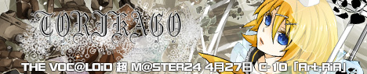

| ■TRACK LIST■ 1. いつか宛てた言葉 feat.鏡音レン 2. 猜疑の果て feat.鏡音リン 3. TORIKAGO feat.鏡音リン／レン |
■INFOMATION■ THE VOC@LOiD 超 M@STER24 4月27日 C-10 「Art-RiA」 イベント価格 300円 |
|
| ■DEMO■ ■LINK■  http://a-head.cc/art-ria/torikagobanner.jpg |
■STUFF LIST■ Produced by Art-RiA Music Compose arato(tr.1 tr.3) 秋時(tr.2) Lyrics マカキセキ Piano/Strings/Keyboard arato Guitar/Bass/Drums 秋時 Mix&Mastering 秋時 Illustration&Design 一夜(dolce) |
|